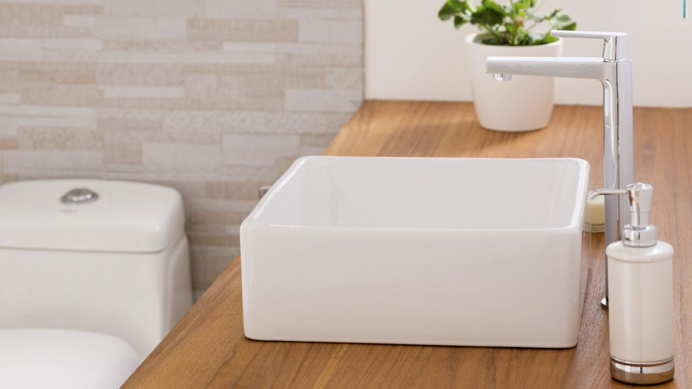
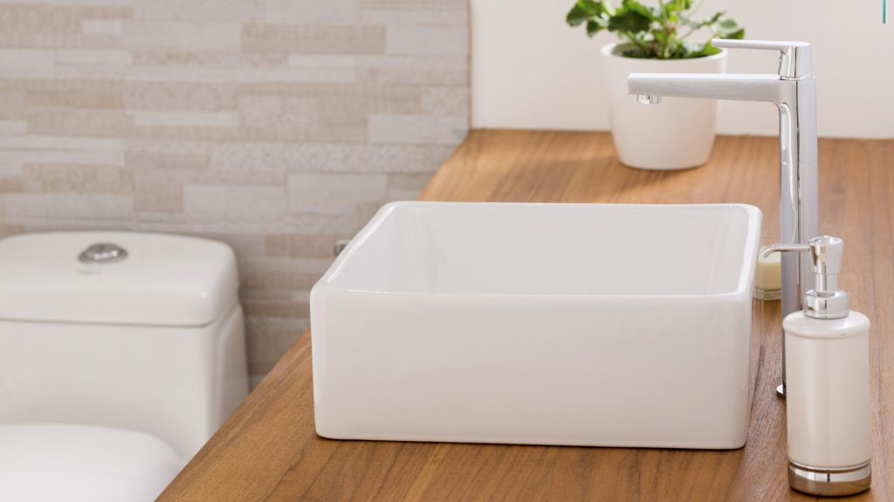

Ideas para su hogar
Encuentre excelentes recomendaciones para construir, decorar, remodelar
 

Tendencias en decoración para el 2019
En cada temporada buscamos darle a la decoración de nuestro hogar ciertos detalles que lo vayan transformando, aquí les mostramos las tendencias en decoración que se van imponiendo en este nuevo año con la finalidad de embellecer nuestros espacios.
En este 2019 le decimos adiós minimalismo; hola maximalismo, por lo que puede hacer de su casa un museo. Es hora de exhibir esos souvenires y cachivaches de los viajes, antiguedades de algún mercado o alguna reliquia de la casa de sus padres. Puede colocarlos con orgullo en vidrieras y y estantes.
No tenga miedo de mezclar lo viejo con lo nuevo. El maximalismo combina variedad de estampados, texturas, formas y colores; sume telas pesadas como pana y terciopelo; y admire tanto los muebles modernos como los antiguos.
Asimismo, se suman otras ideas en decoración:
Cocinas en negro
Una lámpara, mesas o muebles con aplicaciones de color negro pueden darle a su cocina un toque elegante y para contrastar puede colocar una pared de piedra o tablilla. Añada taburetes de colores fuertes como rojo o naranja.
Baños monocromáticos
En cuestión de cuartos de baño la línea sigue siendo muy sencilla y limpia, incorporando elementos asociados a la naturaleza.
Muebles multifuncionales
Muebles multiuso para aprovechar cada centímetro. Sofás que se convierten en camas, banquetas que funcionan como asientos y mesas, camas extensibles, mesas de comedor aptas para el juego, una cama elevada que deje lugar para un escritorio, almacenamiento alto y bajo para las diferentes edades y más muebles multifuncionales para alternar usos según la ocasión, son parte de las tendencias en decoración para este 2019.